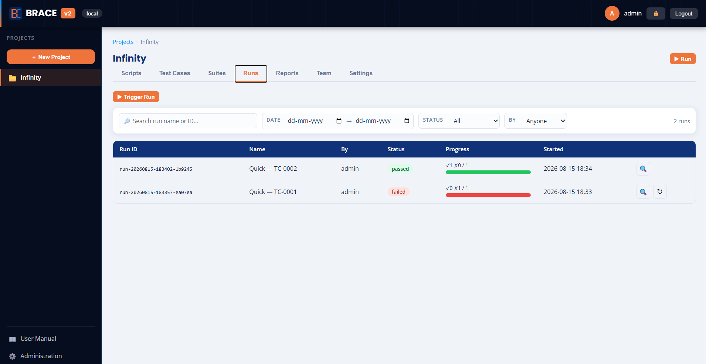
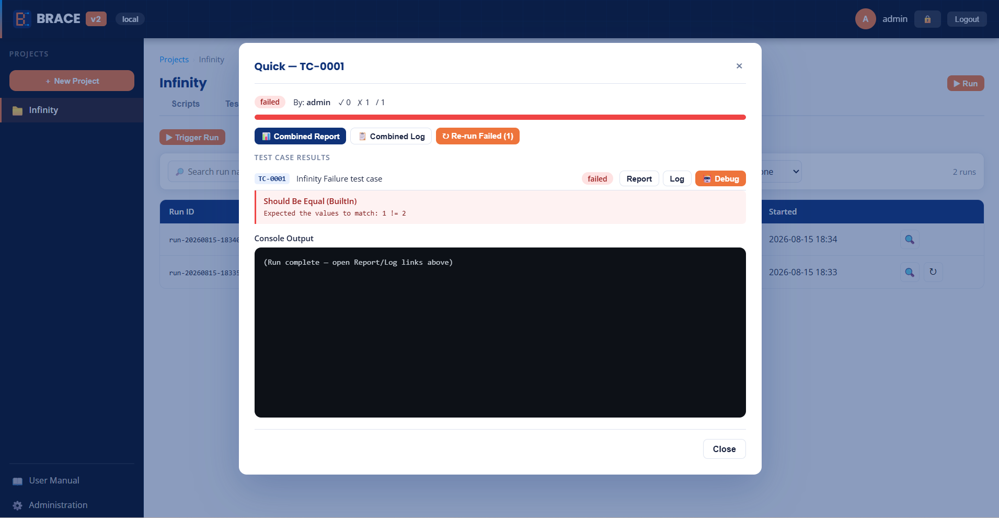
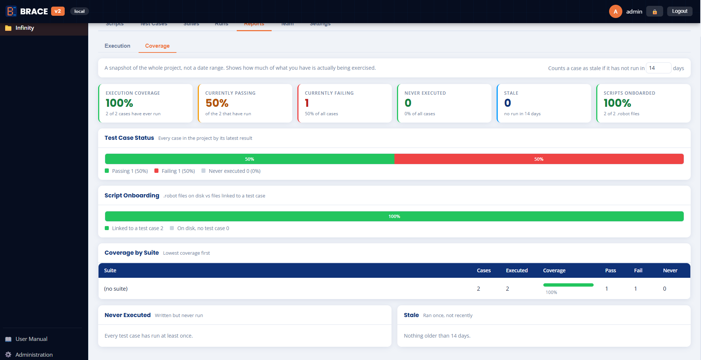
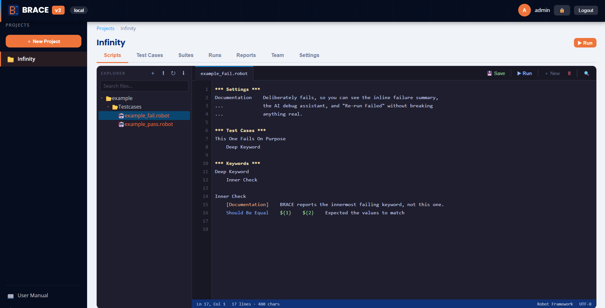

Test management for Robot Framework
Robot Framework runs your tests. BRACE gives your team everything around them — projects, suites, parallel execution, scheduling, reports and alerts. One container, no external database, and it works air-gapped.

What it does
The things every team ends up building by hand once they run Robot Framework at any scale.
Parallel execution
Cases inside a run execute concurrently against a global browser budget, so a 44-case suite finishes in minutes without OOM-killing the pod.
Failure summaries inline
The failing keyword, Robot's own message and the screenshot, pulled
from output.xml — no opening log.html to find the red line.
Re-run only what failed
Three cases instead of forty-four, named as a retry and linked back to the run it came from.
Scheduling
Cron per suite, with a live preview of the next fire times in your timezone — validated before you can save it.
Coverage reporting
How much of your suite has ever actually run, which scripts were never onboarded, and which cases have gone stale.
Email notifications
One mail per run, and only when the outcome changes — so a suite that has been red for weeks does not mail you nightly.
Projects and roles
Viewer, tester and project admin, enforced per request. Git sync per project, tokens encrypted at rest.
Built for locked-down networks
No CDN, no npm build step, no outbound calls at runtime. Prometheus
metrics at /metrics when you want them.
Quick start
Docker is the only prerequisite.
# clone and run
git clone https://github.com/unnismohan/BRACE.git && cd BRACE
docker compose -f docker-compose.local.yml up -d --build
Open http://localhost:8080 and sign in as
admin / admin. An example project ships with the
repo — one passing suite and one that fails on purpose — so you can see
failure summaries and re-run-failed without writing anything first.
For Kubernetes, sizing and configuration, see the README.
Screens
Running against the bundled example project.



.robot files, with Git sync.Contributing
Issues and merge requests are welcome. The project is deliberately small and dependency-light — worth reading the contributing guide first, as a couple of the constraints are unusual (no build step, single worker).